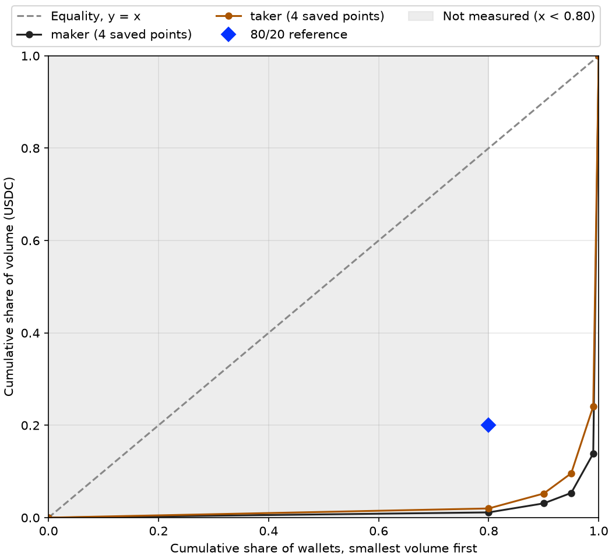
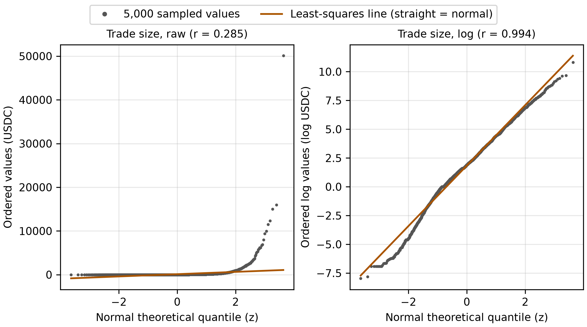

CS 6344 데이터 과학 입문 · 1조 · 발표 스크립트 · 약 25분CS 6344 Intro to Data Science · Group 1 · Talk script · about 25 min
데이터에서 정보를 뽑는다: Polymarket 가격은 확률인가?Getting information out of data: is a Polymarket price a probability?
발표는 영어로 한다. 회색 상자가 말할 문장이다. 한국어 보기는 같은 문장의 번역이다.The grey boxes are the lines to say. The Korean view holds the same lines in Korean.
임무(mission): 데이터에서 정보를 잘 뽑는다.Mission: get information out of data well.
비전(vision): 어떻게 뽑았고, 무엇을 뽑았고, 왜 의미 있는지를 수업 내용으로 설명한다.Vision: explain, with the course methods, how we got the information, what we got, and why it matters.
숫자 출처: 우리 데이터 숫자는 모두 저장된 실행 산출물(MVP1 전체 실행, 검토 확인 실행, 지갑 손익 실행)에서 읽었다. 시장 규모 숫자는 뉴스와 공시이며 우리 데이터가 아니다.Where numbers come from: every number about our data is read from the saved run outputs (the MVP1 full run, the review-check run, the wallet PnL run). Market-size numbers are news and filings, not our data.
Step 1 of 11 · 도입 발표자 · 약 3분Step 1 of 11 · Intro speaker · about 3 min
예측시장이란? Kalshi와 PolymarketWhat is a prediction market? Kalshi and Polymarket
Slide 1a · 표지 + 뉴스 고리 · 40초Cover + news hook · 40 s
보일 것: 제목, 팀, "Polymarket이 2026 중간선거 98.4%를 맞혔다고 보고" (자체 보고, 우리 데이터 아님).Show: title, team, "Polymarket reports it called 98.4% of the 2026 midterm races right" (self-reported, not in our data).
안녕하세요. 1조입니다. 이번 달 Polymarket은 2026년 중간선거 결과의 98.4%를 맞혔다고 스스로 보고했습니다. 그러면 질문이 생깁니다. Polymarket이 70%라고 말하면, 그 일은 정말 10번 중 7번 일어날까요? 이 숫자는 자체 보고이고, 그 시장들은 우리 데이터에 없습니다. 오늘 우리는 실제 거래 데이터에서 그 답을 뽑습니다.Good morning, we are Group 1. This month Polymarket reported that it called 98.4% of the 2026 midterm races right. That number is self-reported, and those markets are not in our data. But it raises our question. When Polymarket says 70%, does the event really happen 7 times out of 10? Today we pull that answer out of real trade data.
Slide 1b · 두 시장 · 1분Two markets · 1 min
보일 것:[소유자: Polymarket 시장 화면 스크린샷, 예: 슈퍼볼 또는 선거][소유자: Kalshi 시장 화면 스크린샷]. 아래 비교표.Show:[Owner: Polymarket market page screenshot, e.g. Super Bowl or election][Owner: Kalshi market page screenshot]. The table below.
Polymarket
Kalshi
무엇을 거래하나What you trade
"이 일이 일어날까?"에 대한 YES / NO 지분YES / NO shares on "will this happen?"
2022 CFTC 벌금 후 미국 차단. QCEX 인수, Polymarket US가 2025-07-09 지정 거래소(DCM)Blocked US users after a 2022 CFTC fine. Bought QCEX. Polymarket US became a designated contract market (DCM) on 2025-07-09
2020년부터 CFTC 지정 거래소(DCM)CFTC designated contract market (DCM) since 2020
돈Money
USDC (달러 연동 토큰, 우리 데이터 단위)USDC (a dollar-pegged token, the unit in our data)
미국 달러 계좌US dollar account
큰 사례Big example
2024 대선 약 37억 달러 (자체 집계)2024 election about $3.7B (self-reported)
슈퍼볼 LX 당일 10억 달러 이상 (자체 발표)Super Bowl LX game day over $1B (self-reported)
우리 데이터In our data
예 (거래 기록 전체)Yes (full trade records)
아니오No
예측시장은 미래 사건에 돈을 거는 시장입니다. 두 곳이 가장 큽니다. Polymarket과 Kalshi입니다. 질문은 늘 같은 꼴입니다. "이 일이 일어날까?" 선거, 스포츠, 슈퍼볼, 금리까지 다룹니다. 우리 데이터는 Polymarket만 담고 있습니다.A prediction market is a market where people bet money on future events. The two largest are Polymarket and Kalshi. Every question has the same form: will this happen? They cover elections, sports like the Super Bowl, and even interest rates. Our data covers Polymarket only.
Slide 1c · 돈을 거는 법, 따는 법 · 1분 20초How to bet, how to win · 1 min 20 s
설명용 값(Illustrative values). 수수료는 빼지 않았다.Illustrative values. Fees are not subtracted.
거는 방법은 이렇습니다. YES 한 장은 사건이 일어나면 1달러, 아니면 0달러를 줍니다. 지금 가격이 70센트면, 사면 30센트를 벌거나 70센트를 잃습니다. 그래서 사람들은 70센트를 70% 확률로 읽습니다. 이기는 방법은 두 가지입니다. 첫째, 실제 확률이 가격보다 높을 때 사서 결과까지 기다립니다. 둘째, 결과 전에 가격이 오르면 팝니다. 결과가 1 아니면 0이라는 점은 Lecture 6의 베르누이(Bernoulli) 변수와 같습니다.Here is how you bet. One YES share pays one dollar if the event happens and zero if it does not. If the price is 70 cents, you either gain 30 cents or lose 70 cents. That is why people read 70 cents as a 70% chance. There are two ways to win. First, buy when the true chance is higher than the price, and wait for the result. Second, sell before the result if the price goes up. An outcome that is 1 or 0 is the Bernoulli variable from Lecture 6.
강의: D6 s23 베르누이(Bernoulli), s24 평균 = p.Lecture: D6 s23 Bernoulli, s24 mean = p.
Step 2 of 11 · 도입 발표자 · 약 2분Step 2 of 11 · Intro speaker · about 2 min
시장 규모: 얼마나 큰가?Market size: how big is it?
Slide 2 · 거래량은 거래량끼리, 매출은 매출끼리 · 2분Volume next to volume, revenue next to revenue · 2 min
A. 오간 돈 (거래량 = 베팅 금액)A. Money traded (volume = amount bet)
B. 1년 매출 (회사가 번 돈)B. Revenue in a year (what the company earns)
회사 가치 신호Value signal
값Value
Kalshi 기업가치 (2026-10)Kalshi valuation (Oct 2026)
$40B
ICE(뉴욕증권거래소 모회사)의 Polymarket 투자ICE (NYSE parent) investment in Polymarket
$1B (2025-10) + $0.6B (2026-03)
얼마나 큰 시장일까요? 거래량은 거래량끼리 비교합니다. 2025년 DraftKings 스포츠북에 걸린 돈은 540억 달러입니다. 같은 해 예측시장 전체 거래량은 Bernstein 추정으로 510억 달러입니다. 2026년에는 Kalshi와 Polymarket 두 곳만으로 4월 중순까지 약 600억 달러입니다. 다만 예측시장 거래량은 거래 양쪽을 세서 커 보일 수 있습니다. 매출은 FanDuel 미국 69.7억, DraftKings 60.5억 달러입니다. 두 예측시장의 매출은 원문으로 확인하지 못했습니다. 대신 Kalshi 기업가치는 400억 달러이고, 뉴욕증권거래소의 모회사 ICE가 Polymarket에 16억 달러를 넣었습니다. 그래서 이 가격이 정확한지는 이제 큰 질문입니다.How big is this market? We compare volume with volume. In 2025, people bet 54 billion dollars at DraftKings' sportsbook. In the same year, all prediction markets traded about 51 billion, a Bernstein estimate. In 2026, Kalshi and Polymarket alone reached about 60 billion by mid-April. Prediction-market volume may count both sides of a trade, so it can look larger. For revenue, FanDuel US earned 6.97 billion and DraftKings 6.05 billion. We could not verify the two prediction markets' revenue from an original source. But Kalshi is valued at 40 billion dollars, and ICE, the owner of the New York Stock Exchange, put 1.6 billion into Polymarket. So whether these prices are accurate is now a big question.
뉴스와 공시이며 우리 데이터가 아니다. 출처: DraftKings SEC 8-K와 실적 통화, Flutter SEC 보도자료, CNBC (Bernstein, Kalshi), ICE 보도자료. 매출에는 스포츠북 외 사업도 섞여 있다. Kalshi 238억, Polymarket 약 225억 달러(2025)는 원문 미확인이라 뺐다.News and filings, not our data. Sources: DraftKings SEC 8-K and earnings call, Flutter SEC release, CNBC (Bernstein, Kalshi), ICE press release. Revenue includes non-sportsbook business. Kalshi $23.8B and Polymarket ~$22.5B (2025) are left out: not verified from the original.
Step 3 of 11 · 도입 발표자 · 약 2분Step 3 of 11 · Intro speaker · about 2 min
이 데이터에서 어떤 정보를 뽑을 수 있나?What information can we pull out of this data?
Slide 3a · 기록 → 정보 → 질문 · 1분 10초Record → information → question · 1 min 10 s
기록Record
뽑는 정보Information
던질 질문Question it opens
시장: 질문, 마감 시각, 결과Market: question, close time, outcome
결과 1 또는 0Outcome 1 or 0
가격이 결과와 맞나? → Q1Does the price match the outcome? → Q1
거래: 가격, 시각Trade: price, time
마감 1일 전 가격 = 군중의 확률Price 1 day before close = the crowd's chance
더 열 수 있는 질문 (이번 범위 밖)More questions (outside this scope)
주제별 정확도, 마감 근처 정확도, 거래 많은 시장의 정확도, 차익거래(arbitrage)Accuracy by topic, near the deadline, in busy markets, arbitrage
데이터에는 세 종류의 기록이 있습니다. 시장, 거래, 그리고 거래 양쪽의 지갑입니다. 시장은 결과를 줍니다. 거래는 가격과 크기를 줍니다. 지갑은 누가 거래했는지를 줍니다. 각 기록에서 정보를 하나씩 뽑으면 질문이 하나씩 생깁니다. 가격이 결과와 맞나? 군중은 누구인가? 전형적인 베팅은 얼마인가? 주제별 정확도나 차익거래 같은 질문도 열 수 있지만, 이번에는 세 개에 집중했습니다.The data has three kinds of records: markets, trades, and the wallets on both sides of each trade. A market gives us the outcome. A trade gives us a price and a size. A wallet tells us who traded. Each record gives one piece of information, and each piece opens one question. Does the price match the outcome? Who is the crowd? What does a typical bet look like? We could also ask about accuracy by topic or about arbitrage, but this time we focus on three.
Slide 3b · 걸러낸 데이터 · 50초Filtered data · 50 s
가격이 정보가 되려면 세 가지가 필요합니다. 마감 하루 전 가격, 분명한 결과, 그리고 최소 10건의 거래입니다. 이 규칙은 결과를 보기 전에 정했습니다. 688,131개 시장 중 47,948개, 7.0%가 남았습니다. 세 질문 모두 같은 시장을 씁니다.For a price to be information, we need three things: a price one day before the close, a clear outcome, and at least 10 trades. We fixed these rules before we saw any result. Out of 688,131 markets, 47,948 are kept, which is 7.0%. All three questions use the same markets.
강의: D2, D3 데이터와 데이터 행렬 (규칙만, 방법 아님).Lecture: D2, D3 data and data matrix (data rules only, not a method).
Step 4 of 11 · 도입 발표자 · 약 1분Step 4 of 11 · Intro speaker · about 1 min
연구 질문(research questions, RQs)Research questions (RQs)
Q1 군중이 맞나?Is the crowd right?
70% 가격 → 70%로 일어나나? 정보: 가격을 확률로 믿어도 되나Priced 70% → happens 70%? Information: can we trust the price as a probability
Q2 군중은 누구?Who is the crowd?
소수 지갑이 거래 대부분? 정보: 가격 뒤에 누가 있나A few wallets do most trading? Information: who stands behind the price
Q3 베팅의 모양?What does betting look like?
거래 크기, 가격의 분포. 정보: 어떤 요약 숫자가 정직한가Spread of trade sizes and prices. Information: which summary number is honest
그래서 질문은 세 개입니다. Q1, 군중이 맞나? 70%로 매긴 일이 70%로 일어나나? Q2, 군중은 누구인가? 소수 지갑이 거래 대부분을 하나? Q3, 베팅은 어떤 모양인가? 셋 다 하나로 이어집니다. 우리가 이 가격을 믿어도 되나?So we ask three questions. Q1: is the crowd right? Do events priced at 70% happen 70% of the time? Q2: who is the crowd? Do a few wallets do most of the trading? Q3: what does betting look like? All three lead to one question: can we trust this price?
Slide 4b · Q2와 Q3는 무엇이 다른가 · 40초 (질문이 나오면)How Q2 differs from Q3 · 40 s (if asked)
Q2: 누가 거래하나Q2: who trades
Q3: 어떤 모양인가Q3: what shape
묻는 것Asks
전체 거래량이 누구에게 몰렸나Who holds the total volume
값 하나하나가 어떻게 퍼져 있나How single values are spread
세는 단위Counts by
양(거래량)의 몫Share of the amount (volume)
개수(지갑, 거래, 시장)의 비율Share of items (wallets, trades, markets)
히스토그램, QQ 그림, 로그 변환, 분포 적합Histogram, QQ plot, log transform, distribution fits
보여 주는 것Shows
가격 뒤에 누가 있나Who stands behind the price
숫자를 어떻게 읽어야 정직한가How to read the numbers honestly
왜 따로 묻나:Why ask both:
모양만으로는 몫을 알 수 없다. 꼬리가 긴 분포에서도 상위 20%의 몫은 60%일 수도, 99%일 수도 있다.Shape alone does not give the shares. A long tail can mean the top 20% hold 60%, or 99%.
몫만으로는 전형적인 값을 알 수 없다. "상위 20%가 98.9%"는 보통 지갑의 크기를 말해 주지 않는다.Shares alone do not give a typical value. "Top 20% hold 98.9%" does not say what a typical wallet trades.
Q1을 돕는 방식이 다르다. Q2는 가격이 누구의 판단인지 묻는다. Q3는 Q1을 읽는 법을 정한다 (예: 구간 0에 시장 18,209개).They help Q1 in different ways. Q2 asks whose view the price is. Q3 sets how to read Q1 (for example, 18,209 markets in bin 0).
Q2와 Q3는 같은 지갑 거래량을 쓰지만 다른 질문입니다. Q3는 값 하나의 모양을 봅니다. 보통 maker 지갑은 101.2 USDC를 거래합니다. Q2는 전체의 몫을 봅니다. 상위 20%가 98.9%를 가집니다. 모양만으로는 몫을 알 수 없고, 몫만으로는 보통 값을 알 수 없습니다. Q3는 전형적인 거래가 어떤 모습인지 알려 주고, Q2는 전체를 누가 가졌는지 알려 줍니다.Q2 and Q3 use the same wallet volume, but they ask different questions. Q3 looks at the shape of single values: a typical maker wallet trades 101.2 USDC. Q2 looks at shares of the total: the top 20% hold 98.9%. The shape does not give the shares, and the shares do not give a typical value. Q3 tells us what a typical trade looks like. Q2 tells us who holds the total.
Step 5 of 11 · Q1 발표자 · 약 7분Step 5 of 11 · Q1 speaker · about 7 min
Q1: 가격은 잘 보정(well calibrated)되었나? 차익거래는? 정규분포인가?Q1: are prices well calibrated? Arbitrage? Is it normal?
Slide 5a · 보정의 뜻 · 1분What calibration means · 1 min
보정(calibration)은 이런 뜻입니다. 70센트 근처에서 거래된 시장 100개를 모읍니다. 그중 약 70개가 YES로 끝나면 가격은 잘 보정된 것입니다. 20센트 근처 100개 중 약 20개면 역시 맞습니다. 그래서 가격을 10개 구간(bin)으로 나누고, 구간마다 실제 비율과 평균 가격을 비교합니다. 이것이 맞으면 가격은 확률로 읽을 수 있습니다.Calibration means this. Take 100 markets traded near 70 cents. If about 70 of them end YES, the price is well calibrated. If about 20 of 100 markets near 20 cents end YES, that is right too. So we split prices into 10 bins and compare the observed rate with the mean price in each bin. If they match, we can read the price as a probability.
강의: D6 s23, s26, s29 베르누이와 이항(binomial) · D7 s13, s14 같은 폭 구간(equal-width bins).Lecture: D6 s23, s26, s29 Bernoulli and binomial · D7 s13, s14 equal-width bins.
Slide 5a2 · Q1 방법, 처음부터 순서대로 · 1분 30초Q1 method, step by step · 1 min 30 s
#
단계Step
무엇을, 왜What and why
우리 값Our value
강의Lecture
0
평가 가격Evaluation price
마감 1일 전 또는 그 전의 마지막 시각에 있는 거래들의 평균 가격. 마감 뒤 가격에는 답이 섞인다Mean price of the trades at the last time stamp at or before 1 day before close. A later price already knows the answer
outcome 1의 가격Price of outcome 1
데이터 규칙Data rule
1
시장 거르기Filter markets
24시간 넘게 묵은 가격과 거래 10건 미만 시장을 뺀다. 빈 시장의 가격은 군중의 판단이 아니다Drop prices older than 24 h and markets with under 10 trades. A price in an empty market is not a crowd's view
47,948
데이터 규칙Data rule
2
구간 10개Ten bins
0.1 폭으로 나눈다. 비슷한 가격끼리 모아야 "70%가 70%인가"를 셀 수 있다Width 0.1. Similar prices must be grouped to count "is 70% really 70%"
같은 폭 10개10 equal-width
D7 s13, s14
3
구간별 두 숫자Two numbers per bin
평균 가격, 그리고 실제 비율 = outcome 1이 이긴 수 / 시장 수. 격차 = 실제 비율 − 평균 가격Mean price, and observed rate = outcome-1 wins / markets. Gap = observed rate − mean price
구간 7: 0.746 대 0.713, −3.29ppBin 7: 0.746 vs 0.713, −3.29 pp
D12 s3
3a
이항 모형 (전제)Binomial model (premise)
시장 하나 = 성공 확률이 가격인 베르누이 시행. 구간의 1 개수 ≈ B(n, 평균 가격)One market = a Bernoulli trial with success chance = price. Count of 1s in a bin ≈ B(n, mean price)
D6 s23, s26, s29
4
카이제곱 적합도 (1번)Chi-square goodness of fit (1 test)
구간 10개가 모두 함께 가격대로인가? 칸 20개의 (O − E)²/E를 더한다. 기대값 E는 가격에서 온다Do all 10 bins match the prices together? Sum (O − E)²/E over 20 cells. E comes from the prices
χ² = 68.0, 자유도 10, p = 1.1 × 10⁻¹⁰χ² = 68.0, df 10, p = 1.1 × 10⁻¹⁰
D12 s3, s4 (적합도 형태는 부분)D12 s3, s4 (goodness-of-fit form partly)
5
구간별 정확 이항 검정 (10번)Exact binomial test per bin (10 tests)
카이제곱은 "어딘가 틀렸다"만 말한다. 그래서 구간마다 이 차이가 우연인지 본다Chi-square only says "something is off". So each bin asks: is this gap chance?
구간 7: p = 0.00036Bin 7: p = 0.00036
D10 s8–s13 (동전 예, 같은 규칙)D10 s8–s13 (coin example, same rule)
6
다중 비교 보정Multiple-testing correction
10번 검정하면 차이가 없어도 하나쯤 걸릴 확률이 1 − 0.95¹⁰ ≈ 40%다. Bonferroni는 모든 p를 0.005와 비교한다. BH는 i번째로 작은 p를 i × 0.005와 비교한다With 10 tests, the chance of at least one false hit is 1 − 0.95¹⁰ ≈ 40%. Bonferroni compares each p with 0.005. BH compares the i-th smallest p with i × 0.005
BH 5개, Bonferroni 4개BH 5, Bonferroni 4
D13 s16, s18, s19
7
판정 규칙Verdict rule
결과 전에 정했다. 카이제곱 p < 0.05이면 "전체가 보정되지 않았다". 구간별 판정은 BH 보정 p < 0.05Fixed before the results. Chi-square p < 0.05 means "not calibrated as a whole". A bin is off when its BH p < 0.05
보정되지 않음Not calibrated
사전 등록Pre-registration
8
효과 크기Effect size
유의한지와 차이가 큰지는 다른 질문이다. 격차, 순 격차, 95% z 구간으로 크기를 본다Significant and large are different questions. Gap, net gap and the 95% z interval show the size
9개 구간 −0.46 ~ −3.29pp, 구간 9는 +0.03pp. 순 격차 −0.99%9 bins −0.46 to −3.29 pp, bin 9 +0.03 pp. Net gap −0.99%
D12 s3, D5 s24, D6 s25
9
확인 검사Checks
결론이 선택 하나에 좌우되지 않는지 본다: 같은 빈도 구간, 10건 기준 없이, 군집 부트스트랩, 로지스틱 보정Does one choice drive the result? Equal-frequency bins, no 10-trade rule, cluster bootstrap, logistic calibration
구간마다 관측 개수 대 기대 개수 (기대 = 시장 수 × 평균 가격)Per bin, observed count vs expected count (expected = markets × mean price)
같다 (한 구간씩)Same (one bin at a time)
쓰는 분포Distribution used
정규 근사 → χ²(10)Normal approximation → χ²(10)
이항분포 B(n, 평균 가격) 그 자체The binomial B(n, mean price) itself
정규 가정Normal assumption
있다. 근거는 중심극한정리(central limit theorem): 개수가 크면 z가 정규에 가깝다Yes. The central limit theorem makes each z near normal when counts are large
없다. 그래서 이름이 "정확(exact)"None. That is why it is called "exact"
관계Link
χ² = 구간 10개 z²의 합 (z는 가격으로 계산한 표준편차를 씀). 21.28 + 11.30 + … + 0.03 = 67.99χ² = sum of the 10 bins' z² (z uses the SD from the price). 21.28 + 11.30 + … + 0.03 = 67.99
이항분포에서 p를 바로 더해 구한다 (5a3)Adds probabilities straight from the binomial (5a3)
방법을 순서대로 보겠습니다. 표본을 뽑지 않습니다. 남긴 47,948개 시장을 모두 씁니다. 먼저 시장마다 마감 하루 전 가격을 정합니다. 마감 뒤 가격에는 답이 섞이기 때문입니다. 가격을 10개 구간으로 나누고, 구간마다 평균 가격과 실제 비율을 셉니다. 그다음 두 가지 검정을 합니다. 카이제곱 적합도 검정은 한 번만 합니다. 10개 구간이 모두 함께 맞는지 묻습니다. 이항 검정은 구간마다 한 번씩, 모두 10번 합니다. 어느 구간이 틀렸는지 묻습니다. 검정을 10번 하면 우연히 하나쯤 걸릴 확률이 약 40%입니다. 그래서 Benjamini-Hochberg와 Bonferroni로 보정합니다. 판정 규칙은 결과를 보기 전에 정했습니다.Here is the method in order. We do not sample. We use all 47,948 kept markets. First, each market gets its price one day before the close, because a later price already knows the answer. We split the prices into 10 bins and count the mean price and the observed rate in each bin. Then we run two kinds of test. The chi-square goodness-of-fit test runs once. It asks whether all 10 bins match together. The binomial test runs once per bin, 10 times in all. It asks which bin is off. With 10 tests, the chance of a false hit somewhere is about 40%, so we correct with Benjamini-Hochberg and Bonferroni. We fixed the verdict rule before we saw any result.
Slide 5a3 · 이항 검정의 p값은 어떻게 구하나 · 1분 (시간이 부족하면 건너뜀)How the binomial test gets its p-value · 1 min (skip if short on time)
구간 0에서 가격이 맞다면 나올 outcome 1 개수의 분포 B(18,209, 0.0183) 대 실제 개수 249. 왜: 파란 꼬리의 넓이가 p값이다. 꼬리가 너무 얇아 그림에서는 띠로만 표시하고 넓이는 숫자로 적었다.Distribution of the outcome-1 count in bin 0 if the price were right, B(18,209, 0.0183), against the observed 249. Why: the area of the blue tails is the p-value. The tails are too thin to see, so a band marks them and the area is written as a number.
#
단계Step
구간 0의 값Bin 0 value
1
귀무가설(null hypothesis): 진짜 확률 = 평균 가격Null hypothesis: true chance = mean price
p = 0.0183, n = 18,209
2
그러면 개수는 이항분포 B(n, p)를 따른다Then the count follows the binomial B(n, p)
기대 332, 표준편차 18.1Expected 332, SD 18.1
3
실제 개수가 나올 확률을 구한다Find the chance of the observed count
P(k = 249) = 2.2e-7
4
확률이 그 이하인 모든 k를 더한다 (양측). 왼쪽 꼬리와 오른쪽 꼬리 둘 다Add every k whose chance is no larger (two-sided). Both the left and the right tail
k ≤ 249: 8.5e-7
k ≥ 423: 7.9e-7
5
합 = p값. 가격이 맞다면 이만큼 빗나갈 확률The sum is the p-value: the chance of a miss this large if the price were right
1.6e-6
6
BH 보정 뒤 0.05와 비교한다Compare with 0.05 after BH correction
1.6e-5 < 0.05 → 이 구간은 가격과 다르다1.6e-5 < 0.05 → this bin is off
구간Bin
기대 대 관측Expected vs observed
정확 이항 p (저장값)Exact binomial p (saved)
정규 근사 p (설명용 계산)Normal approximation p (illustrative)
0
332 vs 249, z = −4.61
1.6e-6
4.0e-6
7
1,716 vs 1,640, z = −3.62
3.6e-4
3.0e-4
두 방법의 결론은 같다. 꼬리 끝에서는 근사가 어느 쪽으로든 조금 어긋난다. 그래서 구간 판정에는 근사 없는 정확 이항 검정을 쓴다. 숫자: runs/142082_mvp1_full_v1r3/q1_bins.csv의 개수로 다시 계산했고, 정확 p는 저장값과 같다.Both give the same verdict. In the far tail the approximation drifts a little, either way. So the bin verdict uses the exact test. Numbers: recomputed from the counts in runs/142082_mvp1_full_v1r3/q1_bins.csv. The exact p matches the saved value.
이항 검정의 p값은 이렇게 구합니다. 가장 싼 구간에는 시장이 18,209개 있고, 평균 가격은 1.83%입니다. 가격이 맞다면 outcome 1은 약 332번 나와야 합니다. 실제로는 249번이었습니다. 가격이 맞다고 가정한 이항분포에서, 249처럼 드문 결과가 나올 확률을 양쪽 꼬리에서 모두 더합니다. 그 합이 1.6 × 10⁻⁶입니다. 가격이 맞다면 거의 일어날 수 없는 결과입니다. 그래서 이 구간의 가격은 맞지 않다고 판정합니다. 정규분포는 가정하지 않습니다. 이항분포에서 바로 계산합니다.Here is how the binomial test gets its p-value. The cheapest bin has 18,209 markets, with a mean price of 1.83%. If the price were right, outcome 1 should happen about 332 times. It happened 249 times. From the binomial we would see if the price were right, we add the chance of every result as rare as 249, in both tails. The sum is 1.6 times ten to the minus six. That almost never happens if the price is right, so this bin's price is off. We assume no normal curve here. We compute straight from the binomial.
강의: D6 s23, s26, s29 이항분포 · D10 s8–s13 이항 검정과 p값 (동전 예).Lecture: D6 s23, s26, s29 binomial distribution · D10 s8–s13 binomial test and p-value (coin example).
Slide 5b · 결과: 전체로는 보정되지 않았다 · 1분 30초Result: not calibrated as a whole · 1 min 30 s
구간별 차이 = 실제 비율 − 평균 가격, 단위 %포인트. 47,948개 시장.Gap per bin = observed rate − mean price, in percentage points. 47,948 markets.
결과입니다. 전체로 보면 가격은 잘 보정되지 않았습니다. 카이제곱(chi-square) 적합도 검정에서 χ² = 68.0, 자유도 10, p = 1.1 × 10⁻¹⁰입니다. 10개 구간 중 9개에서 실제 비율이 가격보다 낮습니다. 가장 큰 차이는 70–80% 구간입니다. 가격은 74.6%, 실제는 71.3%였습니다. 전체 순 차이(net gap)는 −0.99%입니다. 작지만 한 방향입니다. outcome 1(시장의 첫 번째 결과, 63.9%는 Yes)이 조금 비싸게 매겨져 있습니다.Here is the result. As a whole, the prices are not well calibrated. The chi-square goodness-of-fit test gives chi-square 68.0 with 10 degrees of freedom, and p is 1.1 times ten to the minus ten. In 9 of the 10 bins, the observed rate is below the price. The biggest gap is the 70 to 80% bin: priced at 74.6%, observed 71.3%. The net gap over all markets is minus 0.99%. It is small, but it goes one way. Outcome 1, the first-listed outcome of a market, is priced a little too high. In 63.9% of the markets it is labeled Yes.
Slide 5c · 맞히기 ≠ 보정 · 1분Being right ≠ calibrated · 1 min
잰 것Measure
값Value
0.5 기준 정확도 (accuracy)Accuracy at the 0.5 line
83.4%
늘 다수 쪽을 찍을 때 정확도Always guess the majority
63.4%
가격의 평균 제곱 잔차 (mean squared error, MSE)Mean squared error (MSE) of the price
0.107
카이제곱 판정Chi-square verdict
보정 안 됨not calibrated
그런데 시장은 자주 맞힙니다. 0.5를 기준으로 결과를 맞히면 정확도가 83.4%입니다. 늘 다수 쪽을 찍으면 63.4%입니다. 그러니 가격은 쓸모 있는 정보입니다. 하지만 자주 맞히는 것과 확률이 정확한 것은 다른 질문입니다. 뉴스의 98.4%도 같은 이야기입니다.Still, the market is right often. Calling the outcome at the 0.5 line is right 83.4% of the time. Always guessing the majority gives 63.4%. So the price carries real information. But being right often and having an exact probability are two different questions. The 98.4% in the news is the same story.
Slide 5d · 차익거래(arbitrage) 기회는? · 1분 30초Any arbitrage chance? · 1 min 30 s
종류Kind
예Example
우리가 쟀나?Measured?
무위험: 한 시장 안Riskless: inside one market
YES $0.48 + NO $0.49 = $0.97 → 둘 다 사면 $1 받음, +$0.03 (설명용 값)YES $0.48 + NO $0.49 = $0.97 → buy both, get $1, +$0.03 (illustrative)
아니오No
무위험: 두 거래소 사이Riskless: across exchanges
Kalshi YES + Polymarket NO < $1Kalshi YES + Polymarket NO < $1
아니오 (Kalshi 데이터 없음)No (no Kalshi data)
통계적 우위: 보정 차이를 이용Statistical edge: use the calibration gap
비싸게 매겨진 outcome 1의 반대쪽을 산다Buy the other side of the over-priced outcome 1
예, 검토 확인 M5Yes, review check M5
그러면 공짜 돈, 차익거래가 있을까요? 무위험 차익거래는 YES와 NO를 합쳐 1달러보다 싸게 살 때입니다. 우리는 이것을 재지 않았습니다. Kalshi 데이터도 없습니다. 대신 가까운 질문을 쟀습니다. 보정 차이로 돈을 벌 수 있나? 가장 큰 차이는 2.22%이고, 거래 비용 선은 평균 반 스프레드 1.57%입니다. 점 추정으로는 비용보다 큽니다. 하지만 7개 가격 중 95% 구간 전체가 비용 선을 넘는 곳은 0개입니다. 그래서 확실한 공짜 돈이라고 말할 수 없습니다.So is there free money, an arbitrage? Riskless arbitrage means buying YES and NO together for less than one dollar. We did not measure that, and we have no Kalshi data. Instead we measured a close question: can the calibration gap make money? The largest implied gap is 2.22%. The trading cost line, the mean half spread, is 1.57%. As a point estimate, the gap is above the cost. But for 0 of 7 grid prices does the whole 95% band clear the cost line. So we cannot call it sure money.
강의: D21 s15–s19 로지스틱 회귀(logistic regression)를 가격의 logit에 적용 (부분, 논문이 강의 밖으로 표시) · D5 s25, s26 부트스트랩(bootstrap) 구간 (부분). 무위험 차익거래는 강의 밖이며 다음 연구 질문이다.Lecture: D21 s15–s19 logistic regression applied to the logit of the price (partly, the paper labels it outside) · D5 s25, s26 bootstrap interval (partly). Riskless arbitrage is outside the lectures and is a next question.
Slide 5e · 베팅 가격은 정규분포인가? 포아송처럼 n이 크면? · 1분 30초Are bet prices normal? Like Poisson for large n? · 1 min 30 s
가격 하나하나Each price
정규 아님. 양 끝에 몰림. 25% 분위 0.015, 중앙값 0.32, 95% 분위 0.997Not normal. Piles at both ends. 25th pct 0.015, median 0.32, 95th pct 0.997
거래 크기 하나하나Each trade size
정규 아님. 정규 적합 KS D = 0.469. 로그 값은 직선을 훨씬 잘 따름Not normal. Normal fit KS D = 0.469. Log points follow the line much better
구간 안의 outcome 1 개수Count of outcome 1 in a bin
이항(binomial). n이 크면 정규에 가까움 → z 구간이 맞음. 70–80% 구간 n = 2,301Binomial. Near normal for large n → the z interval works. 70–80% bin n = 2,301
마감 1일 전 가격의 히스토그램. 양 끝에 몰린다.Histogram of the price one day before close. It piles up at both ends.
자주 받는 질문입니다. 베팅 가격은 정규분포를 따를까요? 아닙니다. 가격 하나하나는 0과 1 근처 양 끝에 몰립니다. 중앙값은 0.32이고 95% 분위는 0.997입니다. 거래 크기도 정규가 아닙니다. 그럼 데이터가 많아지면 정규가 되나요? 개별 값은 아닙니다. 정규에 가까워지는 것은 개수와 평균입니다. 한 구간의 outcome 1 개수는 이항분포입니다. n이 크면 이항분포는 정규에 가까워집니다. 포아송도 평균이 크면 같습니다. 그래서 우리는 구간마다 1.96 곱하기 표준오차로 z 구간을 그릴 수 있었습니다.A common question: do bet prices follow a normal distribution? No. Each price piles up near 0 and near 1. The median is 0.32 and the 95th percentile is 0.997. Trade sizes are not normal either. Then does more data make it normal? Not the single values. What becomes near normal is a count or a mean. The count of outcome 1 in one bin is binomial. When n is large, the binomial is close to normal, and so is a Poisson with a large mean. That is why we can draw a z interval, 1.96 standard errors, in each bin.
강의: D6 s26, s29 이항과 그 표준편차 · D5 s24 z 구간 · D7 s5, s11 QQ 그림 · D6 s4 정규. 포아송과 중심극한정리(central limit theorem, CLT)는 강의 덱 글에서 찾지 못했다: 강의 밖으로 말한다.Lecture: D6 s26, s29 binomial and its SD · D5 s24 z interval · D7 s5, s11 QQ plot · D6 s4 normal. Poisson and the central limit theorem (CLT) were not found in the deck text: say they are outside the lectures.
Slide 5f · 확인과 의미 · 30초Checks and meaning · 30 s
우리 선택 때문에 차이가 생긴 걸까요? 다섯 가지 확인을 했습니다. 가격 규칙을 바꾸면 −1.20%, Yes/No 시장만 보면 −1.32%입니다. 같은 사건의 시장을 묶은 부트스트랩 구간은 −1.41%에서 −0.58%로 모두 0 아래입니다. 의미는 이렇습니다. 가격은 유용한 정보지만, 확률로 읽을 때는 outcome 1 쪽으로 약 1%포인트 높다고 기억해야 합니다.Did our own choices create the gap? We ran five checks. A different price rule gives minus 1.20%. Yes/No markets alone give minus 1.32%. A bootstrap that groups markets on the same event gives an interval from minus 1.41% to minus 0.58%, all below zero. The meaning: the price is useful information, but read as a probability, outcome 1 runs about one point too high.
[소유자: 왜 가격이 높게 매겨지나][Owner: why prices run high]
Step 6 of 11 · Q2 발표자 · 약 4분Step 6 of 11 · Q2 speaker · about 4 min
Q2 거래 분포: 군중은 누구인가?Q2 trade distribution: who is the crowd?
Slide 6a · 상위 지갑의 몫 · 2분Share of the top wallets · 2 min

로렌츠 곡선(Lorenz curve). 강의 밖, 논문에 표시.Lorenz curve. Outside the lectures, labeled in the paper.
가격은 군중의 가격입니다. 그러면 군중은 누구일까요? 지갑을 USDC 거래량으로 줄 세웠습니다. 80/20 법칙이면 상위 20%가 80%를 가져야 합니다. 실제로는 상위 20% maker 지갑이 maker 거래량의 98.9%, taker는 98.0%를 가집니다. 상위 1%만으로도 86.1%와 75.9%입니다. 평균 maker 거래량은 14,103 USDC, 중앙값은 101.2입니다.A price is the crowd's price, so who is the crowd? We ranked wallets by USDC volume. The 80/20 rule says the top 20% hold 80%. In our data, the top 20% of maker wallets hold 98.9% of maker volume, and takers 98.0%. The top 1% alone hold 86.1% and 75.9%. The mean maker volume is 14,103 USDC, but the median is 101.2.
Slide 6b · maker와 taker, 그리고 돈 · 2분Makers, takers, and money · 2 min
잰 것Measure
값Value
Welch t (로그 거래량, maker 대 taker)Welch t (log volume, maker vs taker)
117.1
평균 log10 거래량 차이Difference in mean log10 volume
0.219
Spearman: 거래 수와 거래량Spearman: trade count vs volume
ρ = 0.655
수수료 전 딴 돈 = 잃은 돈 (남긴 시장)Won = lost before fees (kept markets)
$389.8M
상위 1% 지갑이 가져간 딴 돈의 몫 (추정)Share of winnings to the top 1% (estimate)
~88.0%
중앙값 지갑 순손익Median wallet net profit
−$0.20
maker와 taker는 조금 다릅니다. Welch t 검정에서 t = 117.1이고, 평균 log10 거래량 차이는 0.219입니다. 거래를 많이 할수록 거래량도 큽니다. Spearman ρ = 0.655입니다. 돈은 어떨까요? 수수료 전에는 딴 돈과 잃은 돈이 389.8백만 USDC로 같습니다. 제로섬입니다. 딴 돈의 약 88%가 상위 1% 지갑에 갑니다. 중앙값 지갑은 약 20센트를 잃습니다. 의미는 이렇습니다. 이 가격은 소수 지갑의 거래량이 크게 실린 가격입니다. 단, 지갑은 사람이 아니라 주소이고, 거래량이 가격을 정하는 힘이라고 말하지는 않습니다.Makers and takers differ a little. The Welch t-test gives t = 117.1, and the difference in mean log10 volume is 0.219. Wallets that trade more also move more money: Spearman rho is 0.655. What about money? Before fees, wallets won 389.8 million USDC and lost the same amount. It is zero-sum. About 88% of the winnings go to the top 1% of wallets. The median wallet loses about 20 cents. The meaning: this price carries a lot of volume from a small group of wallets. But a wallet is an address, not a person, and we do not claim volume is price-setting power.
강의: D11 s2, s3, s6 두 표본 t 검정 (Welch는 부분) · D11 s13 KS · D14 s32, s33 Spearman. 숙제: hw04 (Spearman). 손익은 기술 통계이며 사전 판정 기준 밖이다.Lecture: D11 s2, s3, s6 two-sample t-test (Welch partly) · D11 s13 KS · D14 s32, s33 Spearman. Homework: hw04 (Spearman). PnL is descriptive, outside the pre-registered criteria.
[소유자: 몰린 거래량이 가격 읽기에 주는 의미][Owner: what concentrated volume means for reading a price]
Step 7 of 11 · Q3 발표자 · 약 3분Step 7 of 11 · Q3 speaker · about 3 min
Q3: 베팅은 어떤 모양인가?Q3: what does betting look like?
Slide 7a · 거래 크기 · 1분 30초Trade size · 1 min 30 s

거래 크기 QQ 그림. 원값은 휘고, 로그 값은 직선에 가깝다.QQ plot of trade size. Raw points bend away, and log points follow the line.
거래 크기 (USDC)Trade size (USDC)
값Value
평균Mean
129.8
중앙값Median
6.9
정규 적합 KS D / 지수 적합 KS DNormal fit KS D / exponential fit KS D
0.469 / 0.534
거래 크기는 베팅의 기본 단위입니다. 평균은 129.8 USDC인데 중앙값은 6.9입니다. 소수의 아주 큰 거래가 평균을 끌어올립니다. QQ 그림에서 원값은 직선에서 휘지만, 로그를 취하면 직선을 따라갑니다. 정규 적합의 KS 거리는 0.469로 나쁜 적합입니다.Trade size is the basic unit of a bet. The mean is 129.8 USDC but the median is only 6.9. A few very large trades pull the mean up. In the QQ plot, the raw points bend away from the line, but after a log they follow it. The normal fit has a KS distance of 0.469, a poor fit.
Slide 7b · 가격과 지갑, 의미 · 1분 30초Prices, wallets, meaning · 1 min 30 s
가격도 같은 모양을 보입니다. 마감 하루 전 가격의 평균은 0.376, 중앙값은 0.320이고 양 끝에 몰립니다. 지갑 거래량은 maker 평균 14,103, 중앙값 101.2 USDC입니다. 의미는 이렇습니다. 꼬리가 긴 데이터에서 평균은 전형적인 거래를 말해 주지 않습니다. 중앙값과 로그 척도로 읽어야 정직합니다.Prices show a shape too. The price one day before close has a mean of 0.376 and a median of 0.320, and it piles up at both ends. Maker wallet volume has a mean of 14,103 and a median of 101.2 USDC. The meaning: with a long tail, the mean does not describe a typical trade. Read the median and the log scale to be honest.
강의: D5 s2 평균과 중앙값 · D5 s12, s13 히스토그램 · D7 s5, s11 QQ · D7 s12 로그 변환 · D6 s4, s15, s16 정규와 지수 · D6 s19–s22 멱법칙(power law) (부분) · D11 s13, s15–s19 KS. 숙제: hw01 (평균, 중앙값, 히스토그램), hw02 (QQ, 멱법칙, KS).Lecture: D5 s2 mean and median · D5 s12, s13 histogram · D7 s5, s11 QQ · D7 s12 log transform · D6 s4, s15, s16 normal and exponential · D6 s19–s22 power law (partly) · D11 s13, s15–s19 KS. Homework: hw01 (mean, median, histogram), hw02 (QQ, power law, KS).
[소유자: 멱법칙 적합의 x_min 선택][Owner: x_min choice for the power-law fit]
Step 8 of 11 · 도입 발표자 · 약 3분Step 8 of 11 · Intro speaker · about 3 min
결론: 무엇을 뽑았고, 왜 의미 있나Conclusion: what we pulled out, and why it matters
Q
뽑은 정보Information
핵심 숫자Key number
왜 의미 있나Why it matters
Q1
outcome 1 가격이 조금 높다Prices run a little high for outcome 1
−0.99%
가격을 확률로 읽을 때 보정이 필요Reading a price as a probability needs a small correction
Q2
소수 지갑이 거래량 대부분A few wallets carry most volume
98.9%
"군중"은 생각보다 작다The "crowd" is smaller than it sounds
Q3
꼬리가 긴 분포Long-tailed shapes
129.8 vs 6.9
평균 대신 중앙값과 로그Use the median and the log, not the mean
정리합니다. 우리는 거래 기록에서 세 가지 정보를 뽑았습니다. 첫째, 가격은 쓸모 있지만 전체로 보정되지는 않았습니다. outcome 1 쪽으로 약 1%포인트 높습니다. 둘째, 군중은 작습니다. 상위 20% 지갑이 maker 거래량의 98.9%를 가집니다. 셋째, 베팅은 꼬리가 긴 모양이라 평균보다 중앙값이 정직합니다. 한계도 있습니다. 시장의 7.0%만 남겼고, 같은 사건의 시장은 함께 움직여 p값이 낙관적일 수 있으며, 지갑은 사람이 아닙니다. 뉴스로 돌아가면, 98%를 맞히는 것과 확률이 정확한 것은 다릅니다. 감사합니다.To sum up, we pulled three pieces of information out of the trade records. First, the price is useful but not calibrated as a whole: outcome 1 runs about one point high. Second, the crowd is small: the top 20% of wallets hold 98.9% of maker volume. Third, betting has a long tail, so the median is more honest than the mean. There are limits. We kept only 7.0% of the markets. Markets on one event move together, so our p-values may be too small. And a wallet is not a person. Back to the news: being right 98% of the time is not the same as an exact probability. Thank you.
Step 9 of 11 · 참고Step 9 of 11 · Reference
강의 덱에서 가져온 것What we took from the lecture decks
D6 = Lecture 6 덱, s23 = 슬라이드 id. 2026-11-16 감사 기준: 논문의 방법 44개 중 강의 안 30, 부분 12, 강의 밖 2. 숙제에서 직접 계산 18.D6 = Lecture 6 deck, s23 = slide id. From the 2026-11-16 audit: of 44 methods in the paper, 30 in lecture, 12 partly, 2 outside. 18 computed in a homework.
덱Deck
가져온 방법Method
발표 위치Where in talk
숙제Homework
D5 Stat & Visualization
평균, 중앙값, 히스토그램, z 구간, 부트스트랩Mean, median, histogram, z interval, bootstrap
관측 개수 = 249. z = (249 − 332) / 18.1 = −4.6Observed count = 249. z = (249 − 332) / 18.1 = −4.6
구간 안의 outcome 1 개수는 이항분포입니다. 시장 수 n이 정해져 있기 때문입니다. 포아송은 n이 크고 p가 작을 때 이항과 거의 같습니다. 구간 0이 그런 경우입니다. 이항 표준편차는 18.1, 포아송은 18.2로 거의 같습니다. 둘 다 평균이 크면 정규에 가까워집니다. 우리 검정은 정확 이항 검정이라 이 근사가 필요 없습니다. 근사는 z 구간에만 씁니다.The count of outcome 1 in a bin is binomial, because the number of markets n is fixed. When n is large and p is small, the Poisson is almost the same. Bin 0 is such a case: the binomial SD is 18.1 and the Poisson SD is 18.2. Both are near normal when the mean is large. Our per-bin test is the exact binomial test, so it needs no approximation. We use the normal approximation only for the z interval.
강의: 이항은 D6 s26, s29. 포아송은 덱 글에서 찾지 못했다.Lecture: binomial is D6 s26, s29. Poisson was not found in the deck text.
B2 · 중심극한정리는 어디에?Where is the central limit theorem?
뜻: 독립인 값을 많이 더하거나 평균하면, 원래 분포가 무엇이든 그 합과 평균은 정규에 가까워진다.Meaning: add or average many independent values, and the sum or mean is near normal, whatever the original shape.
쓴 곳Where
평균내는 것What is averaged
기대는 것What relies on it
구간별 95% z 구간 (Q1, 8단계)Per-bin 95% z interval (Q1, step 8)
0/1 결과의 평균 = 실제 비율Mean of 0/1 outcomes = observed rate
비율 ± 1.96 × 표준오차rate ± 1.96 × standard error
카이제곱 적합도 (Q1, 4단계)Chi-square goodness of fit (Q1, step 4)
구간마다 정규에 가까운 zA near-normal z per bin
z² 10개의 합 ≈ χ² 분포Sum of 10 z² ≈ χ² distribution
순 격차의 t 구간 (확인 검사)t interval of the net gap (checks)
시장별 격차의 평균Mean of per-market gaps
평균 ± t × 표준오차mean ± t × standard error
쓰지 않은 곳Not used
가격 하나, 거래 크기 하나. 개별 값은 평균이 아니라 정규가 되지 않는다 (5e)A single price or trade size. Single values are not means, so they do not become normal (5e)
중심극한정리는 숫자 하나하나가 아니라 평균에 작동합니다. 실제 비율은 0과 1의 평균이라 정규에 가깝고, 그래서 z 구간을 그립니다. 카이제곱도 정규에 가까운 z를 제곱해 더한 것입니다. 다만 한 사건의 시장들은 독립이 아닙니다. 그래서 p값이 너무 작을 수 있고, 군집 부트스트랩으로 확인했습니다.The central limit theorem works on means, not on single values. The observed rate is a mean of 0s and 1s, so it is near normal, and we can draw a z interval. The chi-square is a sum of squared near-normal z values. But markets on one event are not independent. So the p-values may be too small, and we checked with a cluster bootstrap.
강의: 이 이름은 덱 글에 없다. 이 정리를 쓰는 도구는 덱에 있다: z 구간 D5 s24, t 구간 D11 s9.Lecture: not named in the deck text. The tools that use it are: z interval D5 s24, t interval D11 s9.
B2a · 카이제곱에서 중심극한정리는 어떻게 쓰이나 · 덱 backup 슬라이드 backup-q1-cltHow the chi-square test uses the central limit theorem · deck backup slide backup-q1-clt
한 줄: 중심극한정리는 구간마다 구한 z가 표준정규를 따른다는 근거다. 그래야 z²의 합을 χ²(10) 분포로 읽을 수 있다.One line: the central limit theorem is why each bin's z is near a standard normal. Only then can the sum of z² be read from the χ²(10) distribution.
0/1 결과 하나에서 카이제곱 p값까지의 사슬. 왜: 중심극한정리가 둘째 상자를 채워야 마지막 상자의 분포가 맞다.The chain from one 0/1 outcome to the chi-square p-value. Why: the last box's distribution holds only if the central limit theorem fills the second box.
z와 z²는 runs/142082_mvp1_full_v1r3/q1_bins.csv의 개수로 다시 계산했다. 합은 저장된 χ² = 68.0과 같다.z and z² are recomputed from the counts in runs/142082_mvp1_full_v1r3/q1_bins.csv. The sum matches the saved χ² = 68.0.
합이 저장값과 같다. 그래서 "χ² = z²의 합"이 우리 숫자로 확인된다.The sum matches the saved value. So "χ² = sum of z²" holds on our numbers.
근사는 안전하다. 흔한 기준은 기대 개수 5 이상이다. 가장 작은 값은 151(구간 9, outcome 0)이다.The approximation is safe. The usual rule is an expected count of at least 5. Our smallest is 151 (bin 9, outcome 0).
두 구간이 절반 이상이다. 구간 0과 7이 21.28 + 13.10 = 34.38을 만든다.Two bins give over half. Bins 0 and 7 give 21.28 + 13.10 = 34.38.
중심극한정리가 못 지키는 것은 독립성이다. 한 사건의 시장들은 함께 움직인다. 그러면 실제 분산이 √(n·p·(1−p))보다 크고, χ²가 커지고, p값이 너무 작아진다. 대리 사건 키(proxy event key)로 시장을 묶어 다시 보았고, 순 격차 구간은 여전히 0 아래였다.What the theorem does not protect is independence. Markets on one event move together. Then the real spread exceeds √(n·p·(1−p)), χ² grows, and p is too small. We regrouped markets by a proxy event key, and the net-gap interval stayed below 0.
정확 이항 검정(5a3)은 이 정규 단계를 쓰지 않는다. 이항분포에서 바로 p를 구한다.The exact binomial test (5a3) skips this normal step. It takes p straight from the binomial.
시장 하나의 결과는 0 아니면 1이라 정규분포가 아닙니다. 하지만 구간 하나에는 시장이 수천 개 있습니다. 중심극한정리에 따라 그 개수는 정규에 가깝습니다. 그래서 기대 개수를 빼고 표준편차로 나눈 z는 표준정규에 가깝습니다. 카이제곱 값은 이 z를 제곱해서 10개 구간에 걸쳐 더한 것입니다. 표준정규 10개의 제곱합이 바로 자유도 10인 카이제곱 분포이므로, 여기서 p값을 읽습니다. 우리 숫자로 더하면 67.99, 저장된 68.0과 같습니다. 가장 작은 기대 개수도 151이라 근사는 안전합니다. 다만 중심극한정리는 독립을 가정합니다. 한 사건의 시장들은 함께 움직이므로, 시장을 사건별로 묶어 다시 확인했습니다.One market's outcome is 0 or 1, which is not normal. But a bin holds thousands of markets. By the central limit theorem, the count is near normal. So z, the count minus its expected value divided by the standard deviation, is near a standard normal. The chi-square value squares this z and adds it over the 10 bins. A sum of 10 squared standard normals is exactly the chi-square distribution with 10 degrees of freedom, so we read the p-value there. On our numbers the sum is 67.99, the saved 68.0. The smallest expected count is 151, so the approximation is safe. But the theorem assumes independence. Markets on one event move together, so we regrouped markets by event and checked again.
강의: 카이제곱(관측 대 기대) D12 s3, s4 · z 구간 D5 s24. 중심극한정리라는 이름은 덱 글에 없다.Lecture: chi-square (observed vs expected) D12 s3, s4 · z interval D5 s24. The name central limit theorem is not in the deck text.
B2b · 시장이 독립이 아니면 무엇이 어느 방향으로 바뀌나 · 덱 backup 슬라이드 backup-q1-independenceIf markets are not independent, what moves which way · deck backup slide backup-q1-independence
한 줄: 격차는 그대로다. 흔들림만 커진다. 그래서 z, χ²는 너무 크고, p값은 너무 작고, 구간은 너무 좁게 나온다.One line: the gap stays the same. Only the spread grows. So z and χ² come out too large, p too small, and the interval too narrow.
독립 가정과 실제의 개수 분산. 왜: 같은 사건의 시장끼리 공분산이 양수면 실제 분산이 가정보다 커진다.Variance of the count under independence and in reality. Why: positive covariance within one event makes the real variance larger than assumed.
값Value
독립이 아니면If not independent
이유Why
관측 비율, 평균 가격, 격차, 순 격차 −0.99%Observed rate, mean price, gap, net gap −0.99%
그대로Unchanged
개수를 세는 방법은 같다The counting is the same
개수의 실제 표준편차Real SD of the count
커진다Larger
공분산 항이 더해진다The covariance term adds
계산한 z (구간 0: −4.61)Computed z (bin 0: −4.61)
실제보다 크다Too large
너무 작은 표준편차로 나눴다Divided by too small an SD
χ² = 68.0
실제보다 크다Too large
z²의 합이다It is a sum of z²
p값 (카이제곱, 이항)p-values (chi-square, binomial)
실제보다 작다Too small
결과가 실제보다 드물어 보인다The result looks rarer than it is
95% 구간95% interval
실제보다 좁다Too narrow
표준오차를 작게 잡았다The standard error is too small
BH로 걸린 구간 수 (5개)Bins flagged by BH (5)
실제보다 많을 수 있다May be too many
p가 작게 나와서Because p comes out small
우리가 확인한 것: 대리 사건 키(proxy event key)로 시장을 묶은 군집 부트스트랩(cluster bootstrap).What we checked: a cluster bootstrap with markets grouped by a proxy event key.
묶는 단위Unit
순 격차 95% 구간Net gap 95% interval
폭Width
시장 하나 (독립 가정)One market (independence)
−1.28% ~ −0.70%
0.58 pp
사건 키 1 (군집 16,161개)Event key 1 (16,161 clusters)
−1.41% ~ −0.58%
0.83 pp
사건 키 2 (군집 6,181개)Event key 2 (6,181 clusters)
−1.39% ~ −0.58%
0.81 pp
숫자: papers/paper_mvp1/numbers.tex (R3 M3 행, run 150310).Numbers: papers/paper_mvp1/numbers.tex (R3 M3 rows, run 150310).
예상대로 구간이 약 1.4배 넓어졌다. 그래도 구간 전체가 0 아래다. "가격이 조금 높다"는 결론은 남는다.As expected, the interval is about 1.4 times wider. It still sits fully below 0. "Prices run a little high" stands.
대리 키의 한계. 진짜 사건 키가 데이터에 없다. 대리 키가 덜 묶었다면 실제 구간은 더 넓을 수 있다.Proxy key limit. The data has no true event key. If the proxy groups too little, the real interval may be wider.
구간별 이항 p값은 다시 계산하지 않았다. 그래서 BH 5개 구간의 p값은 "너무 작을 수 있다"고 말한다.Per-bin binomial p-values were not redone. So the five BH bins' p-values "may be too small".
반대 경우 (재지 않음). 한 사건에서 하나만 맞는 시장들("A 승", "B 승")은 음의 상관이다. 같은 구간에 모이면 분산이 오히려 준다.The opposite case (not measured). Markets where only one can win ("A wins", "B wins") are negatively correlated. In the same bin, they shrink the variance.
시장이 독립이 아니면 무엇이 바뀌는지 보겠습니다. 격차 자체는 바뀌지 않습니다. 세는 방법이 같기 때문입니다. 바뀌는 것은 흔들림의 크기입니다. 같은 선거에 걸린 시장들은 함께 움직이므로, 실제 분산이 우리가 가정한 것보다 큽니다. 그러면 z와 카이제곱은 너무 크고, p값은 너무 작고, 구간은 너무 좁게 나옵니다. 즉 실제보다 더 확신하게 됩니다. 그래서 시장을 사건별로 묶어 다시 계산했습니다. 구간은 약 1.4배 넓어졌지만, 여전히 0보다 아래였습니다.What changes if markets are not independent? The gap itself does not change, because the counting is the same. What changes is the size of the spread. Markets on one election move together, so the real variance is larger than we assumed. Then z and chi-square come out too large, p too small, and the interval too narrow. In short, we would be more sure than we should be. So we grouped markets by event and computed again. The interval got about 1.4 times wider, but it stayed below zero.
강의: 부트스트랩 구간 D5 s25, s26 · z 구간 D5 s24. 공분산 항과 군집 단위 재표집은 덱 글에 없다.Lecture: bootstrap interval D5 s25, s26 · z interval D5 s24. The covariance term and resampling whole clusters are not in the deck text.
B2c · 무엇이 종 모양인가: 시뮬레이션으로 보기, 그리고 λ의 뜻What is bell-shaped: a simulation, and what λ means
한 줄: 종 모양은 실제 데이터가 아니라, 가격이 맞는 세상을 여러 번 반복할 때 나오는 "1의 개수"들의 모양이다. λ는 그 종의 중심이다. 시뮬레이션 횟수가 아니다.One line: the bell is not the real data. It is the shape of the "count of 1s" over many repeats of a world where the price is right. λ is the center of that bell, not the number of runs.
무엇What
개수How many
모양Shape
구간 0 시장의 가격Prices of the bin 0 markets
18,209
0 쪽에 몰림 (평균 0.0183). 종 아님. 검정에 모양은 안 쓰인다Piled near 0 (mean 0.0183). Not a bell. The test does not use this shape
시뮬레이션 한 번 안의 시장 결과Market outcomes inside one run
18,209
0과 1, 막대 두 개. 예: 0이 17,883개, 1이 326개0s and 1s, two bars. Example: 17,883 zeros, 326 ones
시뮬레이션마다 나온 "1의 개수"The "count of 1s" from each run
반복 횟수만큼 (아래 10,000개)One per run (10,000 below)
종 모양Bell
실제 데이터Real data
반복 한 번에 해당Like one run
숫자 하나: 249One number: 249
구간 0을 B(18,209, 0.0183)로 10,000번 시뮬레이션했을 때 나온 1의 개수의 분포. 실제 개수 249와 비교한다. 왜: 이 종이 "가격이 맞다면"의 기준선이고, 249는 그 바깥에 있다. 설명용 계산(seed 0)이며, 실제 검정은 시뮬레이션 없이 이항 식으로 같은 종을 계산한다.Count of 1s over 10,000 simulated runs of bin 0 as B(18,209, 0.0183), against the real count 249. Why: this bell is the "if the price were right" baseline, and 249 lies outside it. Illustrative (seed 0). The real test gets the same bell from the binomial formula, with no simulation.
숫자Number
뜻Meaning
구간 0의 값Bin 0 value
바꾸면 무엇이 변하나What changes if it changes
λ (= n·p)
한 번 시뮬레이션할 때 1이 평균 몇 개 나오나Mean count of 1s in one run
332
종의 위치와 폭. 표준편차 ≈ √λ = 18.2Where the bell sits and how wide. SD ≈ √λ = 18.2
n
시뮬레이션 한 번 안의 시장 수Markets inside one run
18,209
λ를 계산할 때 쓴다Used to compute λ
시뮬레이션 횟수Number of runs
숫자를 몇 개 모으나How many counts we collect
10,000 (설명용)10,000 (illustrative)
히스토그램이 얼마나 매끈한가만 바뀐다. 종의 중심과 폭은 그대로다Only how smooth the histogram looks. The center and width stay
100번을 돌리든 100만 번을 돌리든 종의 중심은 332, 폭은 약 18이다. 많이 돌리면 모양이 더 깨끗하게 보일 뿐이다.With 100 runs or a million, the center is 332 and the width about 18. More runs only show the shape more cleanly.
"λ ≥ 5" 규칙의 5는 시뮬레이션 횟수가 아니다. 한 번에 평균 5개 이상 나와야 한다는 뜻이다.The 5 in the "λ ≥ 5" rule is not the number of runs. It means at least 5 expected per run.
λ가 작으면 아무리 많이 돌려도 종이 안 된다. 예: 시장이 100개면 λ = 100 × 0.0183 ≈ 1.8이다. 개수는 0, 1, 2 쪽에 몰린 치우친 모양으로 계속 나온다. 그때는 정규 근사 대신 정확 이항 검정을 쓴다.If λ is small, no number of runs makes a bell. Example: with 100 markets, λ = 100 × 0.0183 ≈ 1.8. The counts keep a skewed shape piled at 0, 1, 2. Then use the exact binomial test, not the normal approximation.
종이 되는 이유: 1의 개수는 0/1 값 18,209개의 합이다. 독립인 값을 많이 더한 합은 종 모양이 된다 (중심극한정리, B2a).Why a bell: the count is a sum of 18,209 values of 0 or 1. A sum of many independent values is bell-shaped (central limit theorem, B2a).
무엇이 종 모양인지 시뮬레이션으로 보겠습니다. 가격이 맞다고 하고, 구간 0의 시장 18,209개마다 동전을 한 번씩 던집니다. 1이 몇 개 나왔는지 숫자 하나를 적습니다. 이것을 만 번 반복하면 숫자가 만 개 생기고, 그 히스토그램이 332를 중심으로 한 종 모양입니다. 실제 개수 249는 만 번 중 한 번도 나오지 않은 값입니다. 종의 중심 332가 람다이고, 람다는 시뮬레이션 횟수가 아니라 한 번에 나오는 1의 평균 개수입니다.Let me show what is bell-shaped with a simulation. Assume the price is right, and flip one coin for each of the 18,209 markets in bin 0. Write down one number: how many 1s came up. Repeat this ten thousand times. We get ten thousand numbers, and their histogram is a bell centered at 332. The real count, 249, never came up in ten thousand runs. The center, 332, is lambda. Lambda is not the number of runs. It is the mean count of 1s in one run.
강의: 이항분포 D6 s23, s26, s29. 포아송과 중심극한정리라는 이름은 덱 글에 없다.Lecture: binomial distribution D6 s23, s26, s29. Poisson and the central limit theorem are not named in the deck text.
B3 · 무위험 차익거래는 어떻게?How does riskless arbitrage work?
종류Kind
조건Condition
할 일Action
이익 (설명용 값)Profit (illustrative)
한 시장의 YES와 NOYES and NO of one market
YES + NO < $1
둘 다 산다. 결과와 상관없이 $1Buy both. $1 whatever happens
$0.48 + $0.49 → +$0.03
결과가 여럿인 사건Event with many outcomes
모든 YES 가격의 합 < $1Sum of all YES prices < $1
모든 YES를 산다. 하나는 반드시 $1Buy every YES. Exactly one pays $1
$0.30 + $0.30 + $0.35 → +$0.05
두 거래소Two exchanges
Kalshi YES + Polymarket NO < $1Kalshi YES + Polymarket NO < $1
양쪽에서 반대편을 산다Buy opposite sides on each
정산 규칙이 다르면 위험이 남는다Risk remains if resolution rules differ
우리 데이터로 재려면: 같은 시각에 한 시장의 두 지분 가격을 맞춰 합을 본다. 그 합에서 수수료를 뺀다.To measure it in our data: match the two share prices of one market at the same time, then take the sum minus fees.
한계: 우리는 체결된 거래만 갖고 있다. 실제로 살 수 있는 호가(order book)는 없다. 그래서 체결가 합이 $1보다 작아도 실제로 살 수 있었다고 말할 수 없다.Limit: we have filled trades only, not the order book. A sum of fill prices below $1 does not prove anyone could have bought at those prices.
새 숫자는 클러스터 실행과 소유자 결정이 필요하다. 이번 발표에서는 하지 않는다.A new number needs a cluster run and an owner decision. Not in this talk.
곡선 모양은 설명용이다. 점과 Gini 값은 MVP1 전체 실행 값이다.The curve shape is illustrative. The dot and the Gini values are from the MVP1 full run.
로렌츠 곡선은 몫을 한 장에 보이는 그림입니다. 지갑을 작은 것부터 줄 세우고, 누적 지갑 비율을 가로에, 누적 거래량 비율을 세로에 놓습니다. 모두 똑같이 거래하면 대각선이 됩니다. 곡선이 아래로 처질수록 몰려 있습니다. 우리 그림에서 가로 80% 지점의 높이는 1.1%입니다. 하위 80% 지갑이 maker 거래량의 1.1%만 가진다는 뜻이고, 곧 상위 20%가 98.9%를 가집니다. 왜 썼을까요? 상위 1%, 5%, 20%의 몫을 곡선 하나로 함께 보이고, 80/20 법칙의 점과 바로 비교할 수 있기 때문입니다. CCDF는 꼬리 모양을 보이고, 로렌츠 곡선은 몫을 보입니다.A Lorenz curve shows shares in one picture. Sort the wallets from smallest to largest. Put the cumulative share of wallets on the x-axis and the cumulative share of volume on the y-axis. If everyone traded the same, the curve would be the diagonal. The lower it sags, the more concentrated. In our figure, the height at x = 80% is 1.1%. So the bottom 80% of wallets hold only 1.1% of maker volume, and the top 20% hold 98.9%. Why use it? One curve shows the top 1%, 5% and 20% shares together, and we can compare it directly with the 80/20 point. The CCDF shows the shape of the tail. The Lorenz curve shows the shares.
강의: 덱 글에 없다. 논문이 강의 밖으로 표시했다. 가장 가까운 덱 내용은 80/20 법칙(D6 s19)과 파레토 차트(D25 s76)다. 파레토 차트에 누적 선이 있는지는 아직 확인 전이다.Lecture: not in the deck text, and the paper labels it outside. The closest deck content is the 80/20 rule (D6 s19) and the Pareto chart (D25 s76). Whether that Pareto chart has a cumulative line is not yet checked.
Step 11 of 11 · 발표 전에Step 11 of 11 · Before the talk
소유자가 채울 것Owner to fill
스크린샷 2장: Polymarket 시장 화면, Kalshi 시장 화면 (Slide 1b).Two screenshots: a Polymarket market page and a Kalshi market page (Slide 1b).
왜 가격이 높게 매겨지나 (Slide 5f).Why prices run high (Slide 5f).
몰린 거래량이 가격 읽기에 주는 의미 (Slide 6b).What concentrated volume means for reading a price (Slide 6b).
멱법칙 x_min 선택 (Slide 7b).The power-law x_min choice (Slide 7b).
무위험 차익거래(YES + NO < $1)를 재려면 새 클러스터 실행과 소유자 결정이 필요하다.Measuring riskless arbitrage (YES + NO < $1) needs a new cluster run and an owner decision.
용어 부록Terms
상품선물거래위원회(Commodity Futures Trading Commission, CFTC): 미국 선물과 예측시장 규제 기관Commodity Futures Trading Commission (CFTC): the US regulator of futures and prediction markets
지정 거래소(designated contract market, DCM): CFTC가 허가한 거래소Designated contract market (DCM): an exchange the CFTC approves
USDC(USD Coin): 1달러에 묶인 토큰USD Coin (USDC): a token pegged to one dollar
outcome 1: 시장의 첫 번째 결과. 남긴 시장의 63.9%에서 YesOutcome 1: the first-listed outcome of a market. Labeled Yes in 63.9% of kept markets
콜모고로프-스미르노프(Kolmogorov-Smirnov, KS) 거리: 두 누적분포의 최대 차이Kolmogorov-Smirnov (KS) distance: the largest gap between two cumulative distributions
상보 누적분포함수(complementary cumulative distribution function, CCDF): 값 x보다 큰 비율Complementary cumulative distribution function (CCDF): the share of values above x
분위수-분위수 그림(quantile-quantile plot, QQ plot): 데이터 분위수를 정규 분위수와 비교. 직선이면 정규에 가깝다Quantile-quantile (QQ) plot: data quantiles against normal quantiles. A straight line means close to normal
Benjamini-Hochberg(BH) 보정: 여러 검정을 한 번에 할 때 거짓 발견 비율을 묶는 보정Benjamini-Hochberg (BH) correction: controls the false discovery rate over many tests
손익(profit and loss, PnL): 지갑이 딴 돈 빼기 잃은 돈Profit and loss (PnL): what a wallet won minus what it lost
반 스프레드(half spread): 사는 가격과 파는 가격 차이의 절반. 거래 비용의 기준Half spread: half the gap between buy and sell prices. Our trading-cost line